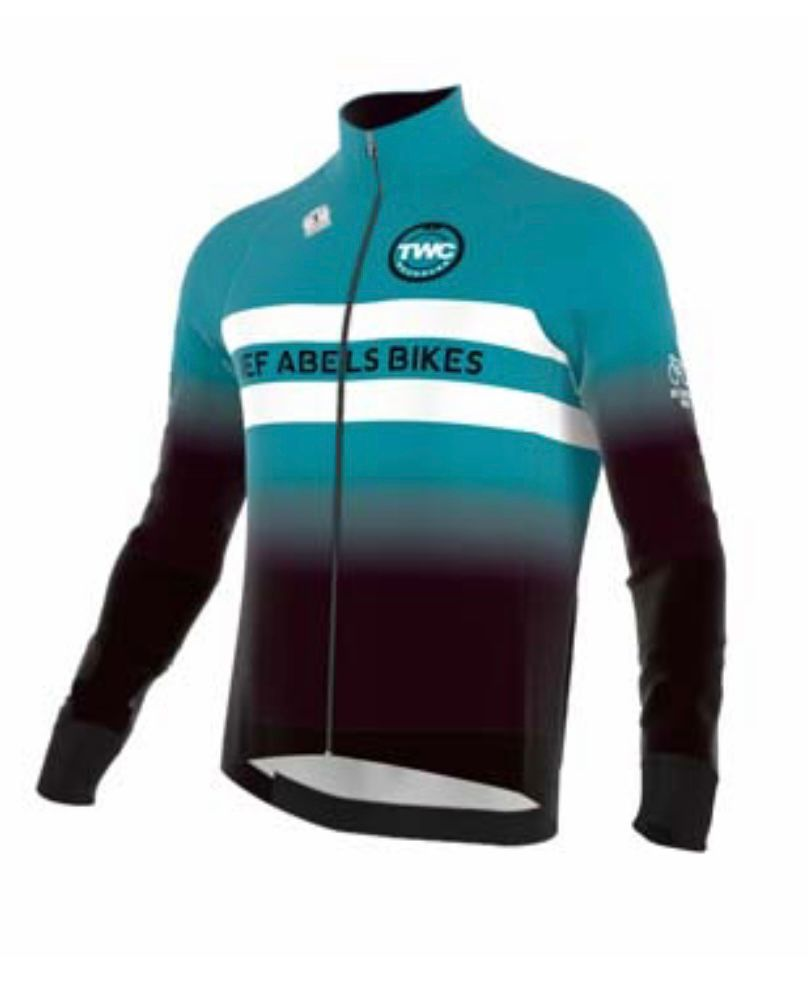
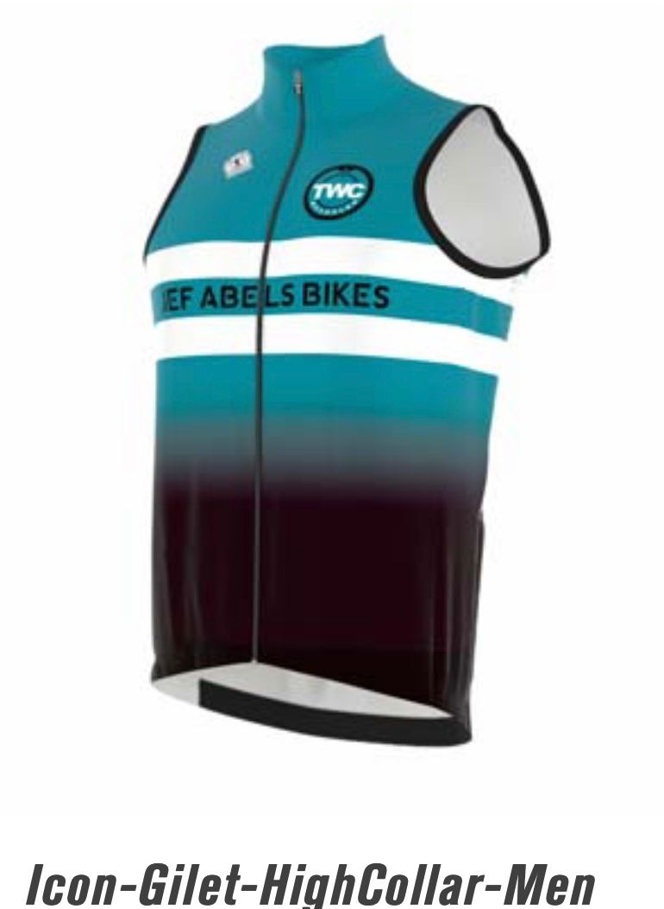
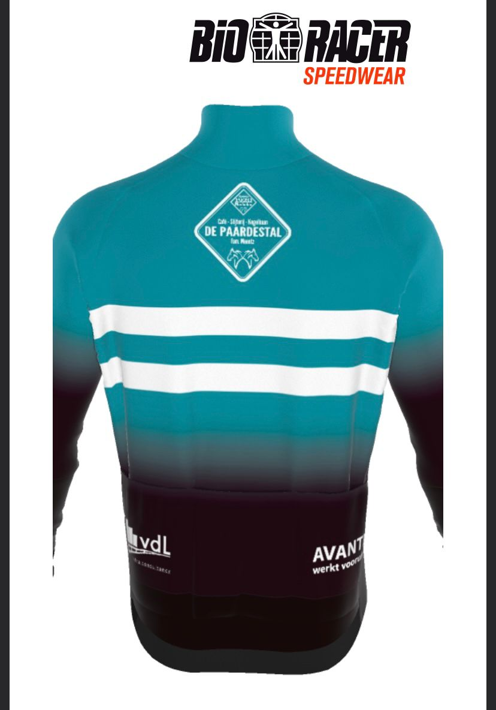
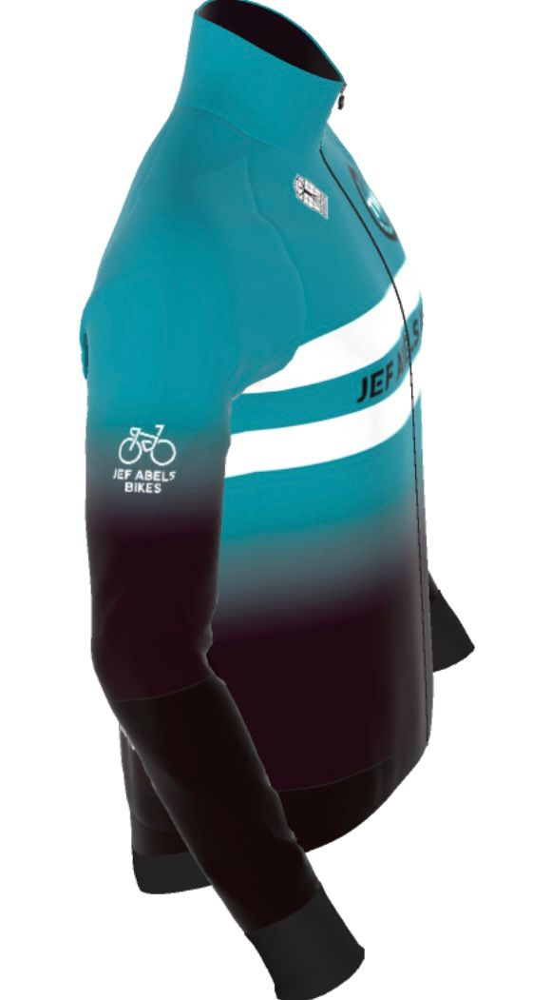
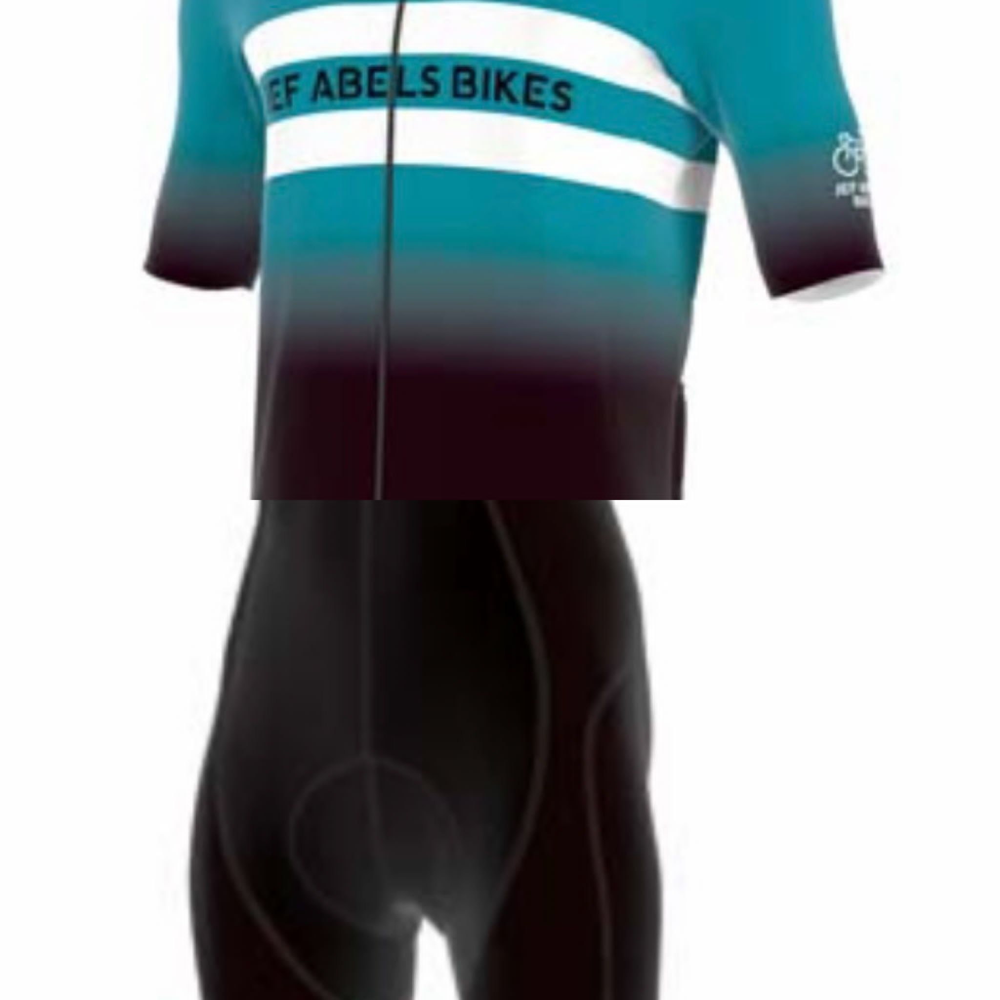
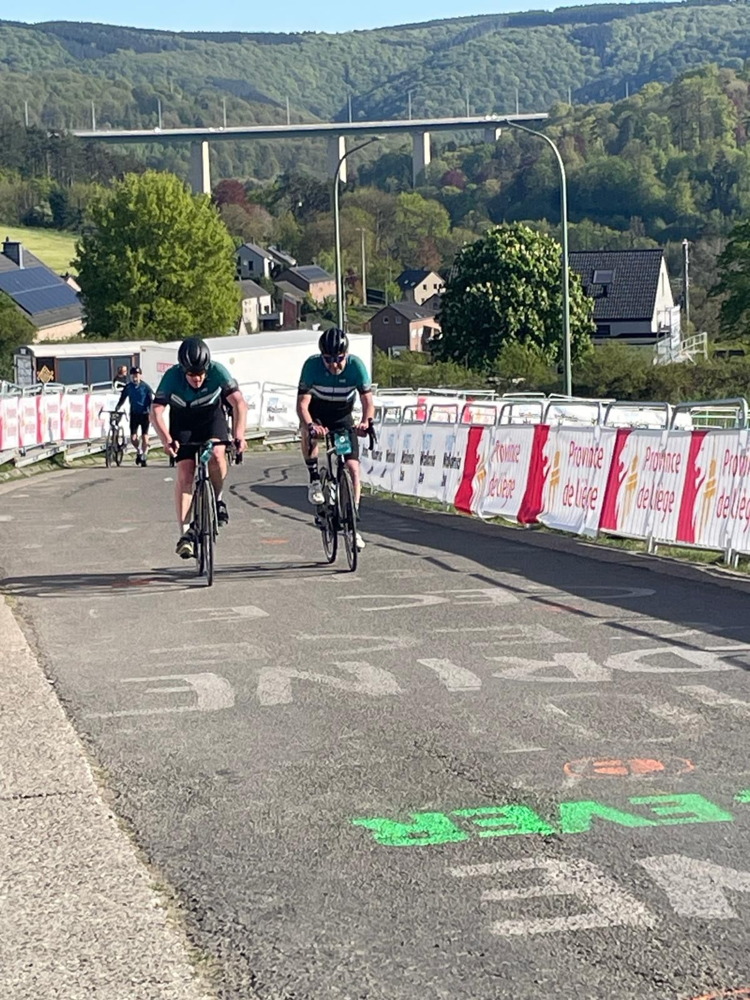

.jpg)

.jpg)




Na weken van voorbereiding, met lange duurritten en veel hoogtemeters, was het op zaterdag 25 april zover. Onze TWC-clubleden Alexander Possen, Sjuul Lenssen, Ron Willems en Roel Tychon starten voor de 250 km toerversie van Luik-Bastenaken-Luik. Nadat ze bijna 11 uur op de fiets hadden gezeten en o.a. de Stockeu, de Rosier en de Redoute bedwongen waren, waren, kwamen de mannen gezamenlijk, na bijna 4100 hoogtemeters, moe maar trots en voldaan, aan de finish in Luik.


De contributie bedraagt EUR 40,00 per jaar. Leden jonger dan 18 jaar EUR 25,00 per jaar. Mocht je lid worden dan gaan we er van uit dat je ook clubkleding aanschaft.
De clubkleding bestaat uit:
- Trui korte mouw
- Trui tempest lange mouw
- Windstopper fietsbody
- Korte broek
- Lange broek bretels met zeem
De prijs voor nieuwe leden bedraagt EUR 175,00. Dit bedrag is inclusief lidmaatschap eerste kalenderjaar.





| Belangrijke data: |
|---|
| - Jaarvergadering: zaterdag 28 februari 2026 |
| - Seizoensopening: zondag 29 maart 2026 (met na afloop lunch in het clublokaal) |
| - Toerversie Luik-Bastenaken-Luik: Zaterdag 25 april 2026 |
| - Clubweekend: Vlaamse Ardennen - Geraardsbergen vrijdag 12 juni - zondag 14 juni 2026 |
| - Seizoensafsluiting: zondag 25 oktober 2026 (met na afloop lunch in het clublokaal) |
| - Clubmiddag: Nog niet bekend |
TWC Mechelen beheert een eigen MTB-route die weer onderdeel is van het grensoverschrijnende MOZL-netwerk (Stichting Mountainbike Ontwikkeling Zuid-Limburg).
De in het heuvelandschap gelegen Mechelen-route biedt prachtige vergezichten en is met een lengte van 23 km en 433 hoogtemeters ook voor beginners goed te doen. Startplaats is de Mechelerhof, Spetsesweide 5, Mechelen.